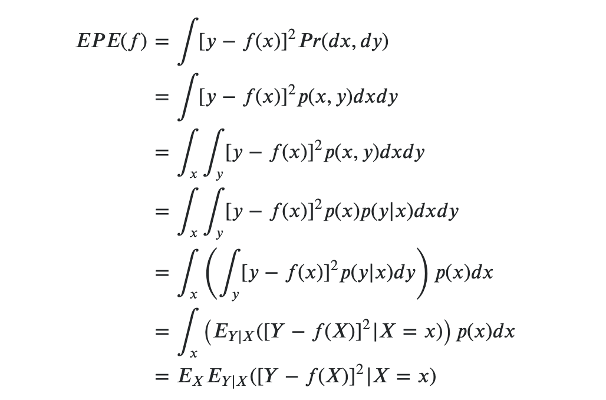
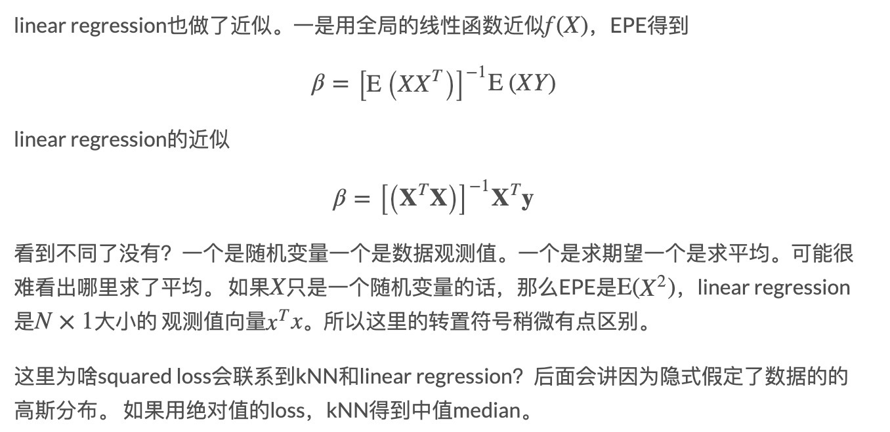

[TOC]
第二章 监督学习综述
2.1 简介
Supervised learning:the goal is to use the inputs to predict the values of the outputs
Inputs: predictors/independent variables
Outputs:responses/dependent variables
2.2 变量数据类型
Outputs:
- regression--quantitative：定量
- classification--qualitative：定性 categorical/discrete/factors
Inputs:
- ordered categorical
处理多类别的定性变量，通常用虚拟变量(dummy variables)来编码。
记号说明：
- 输入：X，代表第j个特征
- 输出：Y(定量)，G(定性)， 预测值
- 观测值（样本）：代表第i个样本
2.3 最小二乘法(Least Squares) 和 最近邻居法(Nearest Neighbors)
2.3.1 线性模型和最小二乘法
线性模型(linear model)：
给定一组输入,通过如下模型预测Y： 其中，是截距(intercept)，在ML里面也叫bias。通常把当做常量1的系数，上式将简化为： 利用残差平方和(residual sum of squares)来fit模型： 由于是二次函数(quadratic function)，因此一定存在最小值，但是可能不唯一。可以将写成如下形式 对求导数可得Normal equation 若非奇异(nonsingular)，则有唯一解：
2.3.2 最近邻居法
k-NN算法:找到距离x最近的k个观测值来表示: 其中：表示在训练集中距离$x$最近的个点的集合。
从算法可以得知，随着k的增大，k-NN在训练集上的误差将逐渐增大。特别地，如果，此时在训练集上的误差为0。
the effective number of parameters of k-nearest neighbors is N/k
- effective number：又名Degree of Freedom, 或VC-Dimension
参考文献:https://libingchen.me/blog/esl/featured/2018/08/05/ESLII-5-Effective-Number-KNN/
2.3.3 从最小二乘法到NN
- 最小二乘法：低方差，高偏差，依赖决策边界
- k-NN：依赖输入，不稳定，高方差和低偏差
—————待续-----------
2.4 统计决策理论
设,,X和Y的联合概率分布(joint distribution)为，损失函数(Loss function)为，假设为平方误差损失(squared error loss): 预测误差的期望(expected (squared) prediction error)为： 根据条件概率公式 $P(X,Y) = P(Y|X)P(X)$, $P(Y|X) = P(Y,X)/P(X)$,
 https://stats.stackexchange.com/questions/92180/expected-prediction-error-derivation
最终得到 对于每个点预测，把和它X向量取值一样的样本点都找出来，然后取他们的平均值就可以了。
k-NN的近似,对上式做了两个近似：
- 用平均值取代期望
- 用邻域取代了X
对于线性回归，假设 ,可以解得 
http://xuewei4d.github.io/machinelearning/notes/esl-chapter2/